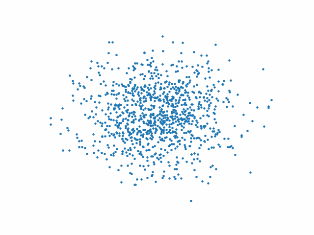
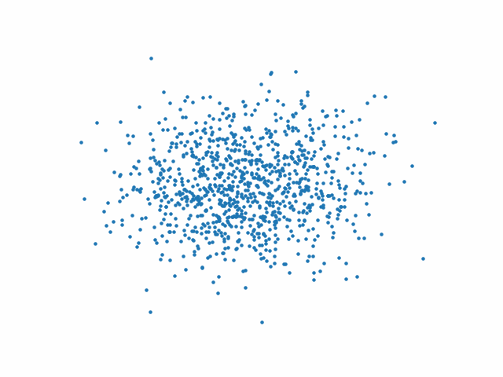
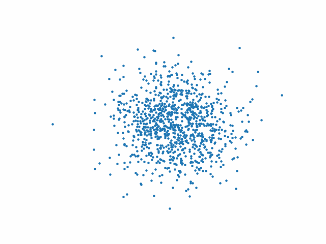

Modèles de diffusion#
Introduction#
Un modèle de diffusion (de débruitage) transforme du bruit à partir d’une distribution simple en un échantillon de données. Le modèle se compose de deux processus (Fig. 70) :
un processus de diffusion vers l’avant \(q\), choisi, qui ajoute progressivement du bruit gaussien à une donnée, jusqu’à aboutir à du bruit pur
un processus de diffusion inverse de débruitage \(p_{\boldsymbol\theta}\) , modélisé par un réseau de neurones, entraîné à débruiter progressivement une donnée à partir d’un bruit pur, jusqu’à obtenir une réalisation d’une donnée réelle.
Les processus sont temporels, indexés par le temps \(t\in[\![0,T]\!]\). A \(t=0\), on échantillonne une donnée réelle \(\boldsymbol 𝐱_0\) de la distribution de données. Le processus \(q\) échantillonne un bruit provenant d’une distribution gaussienne à chaque pas de temps \(t\) , ajouté à la donnée du pas de temps précédent. Si \(T\) est suffisamment et que les processus d’ajout de bruit est correct, on obtient une distribution gaussienne isotrope à \(t=T\).
Remark 3
Une distribution gaussienne isotrope \(\mathcal N(\boldsymbol \mu,\boldsymbol \Sigma)\) est telle que \(\boldsymbol \Sigma = \sigma^2\boldsymbol I\).

Modèle de diffusion#
Modèle#
Soit \(q(\mathbf{x}_0)\) la distribution des données réelles. On échantillonne \(\mathbf{x}_0 \sim q(\mathbf{x}_0)\) et on définit un processus de diffusion avant \(q(\mathbf{x}_t | \mathbf{x}_{t-1})\) qui ajoute un bruit gaussien à chaque pas de temps \(t\in[\![1,T]\!]\), selon une mise à jour de la variance connue \(0 < \beta_1 < \beta_2 < ... < \beta_T < 1\) :
Chaque donnée \(\boldsymbol x_t\) est ainsi tirée selon une distribution conditionnelle gaussienne \(\mathbf{\mu}_t = \sqrt{1 - \beta_t} \mathbf{x}_{t-1}\) et \(\sigma^2_t = \beta_t\),ce qui peut être réalisé en échantillonnant selon \(\mathbf{\varepsilon} \sim \mathcal{N}(\mathbf{0}, \mathbf{I})\) et en posant \(\mathbf{x}_t = \sqrt{1 - \beta_t} \mathbf{x}_{t-1} + \sqrt{\beta_t} \mathbf{\varepsilon}\).
En définissant les \(\beta_t\) correctement, \(\mathbf{x}_T\) est un bruit gaussien.
Originellement, la croissance des \(\beta_t\) a été supposée linéaire, de \(\beta_1 = 10^{−4}\) à \(\beta_T = 0.02\) [1]. Cependant, des auteurs ont montré qu’une mise à jour des coefficients \(\beta_t\) à l’aide d’un cosinus était plus efficace :
Si on connaissait la distribution conditionnelle \(p(\mathbf{x}_{t-1} | \mathbf{x}_t)\), alors on pourrait calculer le processus inverse en tirant \(\mathbf{x}_T\) selon une distribution gaussienne isotrope, et en « débruitant » progressivement pour aboutir en \(t=0\) à une réalisation \(\mathbf{x}_0\) de la distribution des données. Cependant, \(p(\mathbf{x}_{t-1} | \mathbf{x}_t)\) n’est pas accessible et on utilise un réseau de neurones \(p_{\boldsymbol \theta} (\mathbf{x}_{t-1} | \mathbf{x}_t)\) pour approcher cette distribution conditionnelle, où \(\boldsymbol \theta\) est l’ensemble des paramètres du réseau.
Si on suppose que le processus inverse est gaussien, alors on peut écrire
Le réseau doit donc apprendre la moyenne et la variance, qui dependent du temps. Dans l’implémentation initiale [1], les auteurs relaxent la contrainte de la variance (\(\Sigma_\theta ( \mathbf{x}_t, t) = \sigma^2_t \mathbf{I}\)), et apprennent uniquement la moyenne. Dans les implémentations suivantes (par exemple celle-ci), la contrainte a été prise en compte.
Dans la suite, on suppose seulement apprendre la moyenne.
Apprentissage#
La combinaison de \(q\) et \(p_{\boldsymbol\theta}\) peut-être vue comme un autoencodeur variationnel. Ainsi, ELBO peut être utilisée pour minimiser la log-vraisemblance négative par rapport à \(\mathbf{x}_0\) . ELBO est la somme de fonctions de pertes calculées à chaque pas de temps
\(\ell = \displaystyle\sum_{t=0}^T \ell_t\).
Par construction de \(q\) et \(p_{\boldsymbol\theta}\), les \(\ell_t,t\in[\![1,T]\!]\) sont les divergences de Kullback-Leibler entre deux distributions gaussiennes, ce qui peut être écrit comme une perte \(\ell_2\) calculée sur les moyennes de ces gaussiennes.
Par construction de \(q\), puisque la somme de gaussiennes est égalemment gaussienne, on peut échantillonner \(\mathbf{x}_t\) pour tout \(t\) conditionnellement à \(\mathbf{x}_0\) : ainsi
avec \(\alpha_t = 1 - \beta_t\) et \(\bar{\alpha_t} = \displaystyle\prod_{s=1}^{t} \alpha_s\).
Les \(\bar{\alpha}_t\) sont des fonctions des \(\beta_t\), permettant de mettre à jour la variance. Ces derniers étant connus, les \(\bar{\alpha}_t\) le sont aussi et peuvent être précalculés. Ainsi, pendant l’entraînement, on tire aléatoirement \(t\) et on optimise \(\ell_t\)
Il est également possible de reparamétriser la moyenne pour que le réseau de neurones apprenne le bruit ajouté via un réseau \(\mathbf{\varepsilon}_{\boldsymbol \theta}(\mathbf{x}_t, t)\) pour un niveau de bruit \(t\) dans les divergences de Kullback-Leibler définissant les \(\ell_t\). Le réseau \(p_{\boldsymbol \theta}\) prédit donc le bruit plutôt que la moyenne, qui peut ensuite être calculée par
La fonction objectif finale \(\ell_t\), à \(t\) choisi aléatoirement et étant donné \(\mathbf{\varepsilon} \sim \mathcal{N}(\mathbf{0}, \mathbf{I})\) est alors :
avec \(\mathbf{x}_0\) la donnée initiale. \(\mathbf{\varepsilon}\) est le bruit échantillonné au temps \(t\) et \(\mathbf{\varepsilon}_\theta (\mathbf{x}_t, t)\) est le réseau de neurones, équipé d’une fonction de perte quadratique entre le bruit réel et le bruit gaussien prédit.
Algorithm 8 (Algorithme d’apprentissage d’un modèle de diffusion)
Tant que (non convergence)
\(\boldsymbol x_0\sim q(\boldsymbol x_0)\)
\(t\sim Uniform(1,T)\)
\(\varepsilon\sim\mathcal N(\boldsymbol 0,\boldsymbol I)\)
Calculer \(\nabla_{\boldsymbol\theta}\|\mathbf\varepsilon - \mathbf{\varepsilon}_\theta(\sqrt{\bar{\alpha}_t} \mathbf{x}_0 + \sqrt{(1- \bar{\alpha}_t) } \mathbf{\varepsilon}, t) \|^2\)
Mettre à jour \(\boldsymbol\theta\) par un pas de descente de gradient
Plutôt qu’un seul exemple \(x_0\), le réseau est classiquement entraîné sur un batch.
Réseau de neurones#
Le réseau de neurones \(\mathbf{\varepsilon}_\theta(\mathbf{x}_t, t)\) utilisé dans [2] traite des images et les auteurs utilisent le réseau U-net (Fig. 71)
U-Net est une architecture pour la segmentation sémantique. Il se compose d’un chemin de contraction et d’un chemin d’expansion. Le chemin de contraction suit l’architecture typique d’un réseau convolutif. Il consiste en l’application répétée de deux convolutions 3\(\times\)3 , chacune suivie d’une activation ReLU et d’une opération d’agrégation max 2\(\times\)2 avec un stride égal à 2 pour le sous-échantillonnage. À chaque étape de sous-échantillonnage, le nombre de canaux de caractéristiques est doublé. Chaque étape du chemin d’expansion consiste en un suréchantillonnage de la carte de caractéristiques suivi d’une convolution 2\(\times\)2 qui divise par deux le nombre de canaux de caractéristiques, une concaténation avec la carte de caractéristiques recadrée correspondante du chemin de contraction, et deux convolutions 3\(\times\)3, chacune suivie d’une ReLU. Le recadrage est nécessaire en raison de la perte de pixels de bordure dans chaque convolution. Sur la dernière couche, une convolution 1\(\times\)1 est utilisée pour faire correspondre chaque vecteur de caractéristiques à 64 composantes au nombre de classes souhaité. Au total, le réseau comporte 23 couches de convolution.
Implémentation#
De nombreuses implémentations du modèle DDPM utilisant U-net sont disponibles (voir par exemple ce lien). On propose ici l’implémentation d’un modèle plus simple (pour le réseau \(\mathbf{\varepsilon}_\theta(\mathbf{x}_t, t)\)), permettant la génération d’un nuage de points de forme donnée. Le réseau sera ici un simple perceptron multicouches.
import torch
import torch.nn as nn
import matplotlib.pyplot as plt
import numpy as np
from sklearn.datasets import make_swiss_roll
On génère une forme (ici un swiss roll)
X,_ = make_swiss_roll(1000,noise=0.1)
X = X[:,[0,2]]/10.0
data = X.T
plt.scatter(*data);
plt.axis('off')
dataset = torch.Tensor(X).float()
Fig. 72 Forme du nuage de points \(x_0\)#
On précalcule ensuite les constantes du modèle. Les \(\beta_t\) évoluent de manière linéaire.
T = 150
betas = torch.linspace(-6,6,T)
betas = torch.sigmoid(betas)*(0.5e-2 - 1e-5)+1e-5
alphas = 1-betas
alphas_prod = torch.cumprod(alphas,0)
alphas_prod_p = torch.cat([torch.tensor([1]).float(),alphas_prod[:-1]],0)
alphas_bar_sqrt = torch.sqrt(alphas_prod)
one_minus_alphas_bar_log = torch.log(1 - alphas_prod)
one_minus_alphas_bar_sqrt = torch.sqrt(1 - alphas_prod)
On calcule \(x_t\) à un temps quelconque donné.
def q_x(x_0,t):
noise = torch.randn_like(x_0)
alphas_t = alphas_bar_sqrt[t]
alphas_1_m_t = one_minus_alphas_bar_sqrt[t]
return (alphas_t * x_0 + alphas_1_m_t * noise)
Le processus avant \(q\) est illustré sur la (Fig. 73), à partir du code suivant :
nb_courbes = 20
fig,axs = plt.subplots(4,5)
for i in range(nb_courbes):
j = i//5
k = i%5
n = i*T//nb_courbes
q_i = q_x(dataset,torch.tensor([n]))
axs[j,k].scatter(q_i[:,0],q_i[:,1],s=5)
axs[j,k].set_axis_off()
axs[j,k].set_title('$q(\mathbf{x}_{'+str(n)+'})$')
plt.tight_layout()
Fig. 73 Application du processus avant \(q\) au cours du temps#
On construit ensuite le processus de diffusion. Le réseau utilisé est un perceptron multicouches à trois couches cachées de n_hiddenneurones et à activations ReLU.
n_hidden = 64
class DDPM(nn.Module):
def __init__(self,n_steps,n_hidden=64):
super(DDPM,self).__init__()
self.linears = nn.ModuleList(
[
nn.Linear(2,n_hidden),nn.ReLU(),
nn.Linear(n_hidden,n_hidden),nn.ReLU(),
nn.Linear(n_hidden,n_hidden),nn.ReLU(),
nn.Linear(n_hidden,2),
]
)
# Gestion des pas de temps
self.step_embeddings = nn.ModuleList(
[
nn.Embedding(n_steps,n_hidden),
nn.Embedding(n_steps,n_hidden),
nn.Embedding(n_steps,n_hidden),
]
)
def forward(self,x,t):
for idx,embedding_layer in enumerate(self.step_embeddings):
t_embedding = embedding_layer(t)
x = self.linears[2*idx](x)
x += t_embedding
x = self.linears[2*idx+1](x)
x = self.linears[-1](x)
return x
On écrit ensuite la fonction de perte du réseau
def diffusion_loss(model,x_0,alphas_bar_sqrt,one_minus_alphas_bar_sqrt,n_steps):
batch_size = x_0.shape[0]
# Généreration de temps aléatoires pour un échantillon de taille batch_size
t = torch.randint(0,n_steps,size=(batch_size//2,))
t = torch.cat([t,n_steps-1-t],dim=0)
t = t.unsqueeze(-1)
# Coefficient de x_0
a = alphas_bar_sqrt[t]
# Génération, d'un bruit aléatoire
e = torch.randn_like(x_0)
# coefficient du bruit
b = one_minus_alphas_bar_sqrt[t]
#réalisation à l'instant t
x = x_0*a+e*b
# Prédiction du bruit à l'instant t
output = model(x,t.squeeze(-1))
# Erreur quadratique moyenne
return (e - output).square().mean()
On écrit ensuite la fonction d’échantillonnage du processus inverse
# On récupère x[T], x[T-1], x[T-2]|... à partir de x[T]. . x[0]
def p_sample_loop(model,shape,n_steps,betas,one_minus_alphas_bar_sqrt):
cur_x = torch.randn(shape)
x_seq = [cur_x]
for i in reversed(range(n_steps)):
cur_x = p_sample(model,cur_x,i,betas,one_minus_alphas_bar_sqrt)
x_seq.append(cur_x)
return x_seq
# On échantillonne la valeur reconstruite à l'instant t à partir de x[T]
def p_sample(model,x,t,betas,one_minus_alphas_bar_sqrt):
t = torch.tensor([t])
coeff = betas[t] / one_minus_alphas_bar_sqrt[t]
eps_theta = model(x,t)
mean = (1/(1-betas[t]).sqrt())*(x-(coeff*eps_theta))
z = torch.randn_like(x)
sigma_t = betas[t].sqrt()
sample = mean + sigma_t * z
return (sample)
Et on entraîne enfin le modèle
batch_size = 128
dataloader = torch.utils.data.DataLoader(dataset,batch_size=batch_size,shuffle=True)
nb_epochs = 4000
model = DDPM(T,n_hidden)
optimizer = torch.optim.Adam(model.parameters(),lr=1e-3)
for t in range(nb_epochs):
for idx,batch_x in enumerate(dataloader):
loss = diffusion_loss(model,batch_x,alphas_bar_sqrt,one_minus_alphas_bar_sqrt,T)
optimizer.zero_grad()
loss.backward()
torch.nn.utils.clip_grad_norm_(model.parameters(),1.)
optimizer.step()
if t%100==0:
x_seq = p_sample_loop(model,dataset.shape,T,betas,one_minus_alphas_bar_sqrt)
Les figures suivantes présentent l’action du processus inverse au début (Fig. 74), au milieu (Fig. 75) et à la fin (Fig. 76) de l’entraînement.
Fig. 74 Processus inverse au début de l’entraînement#
Fig. 75 Processus inverse au milieu de l’entraînement#
Fig. 76 Processus inverse à la fin de l’entraînement#
On peut alors partir d’un bruit gaussien 2D et appliquer le processus inverse pour générer une réalisation des données d’entrée.

On peut également partir d’autres nuages de points
 |
 |
|---|